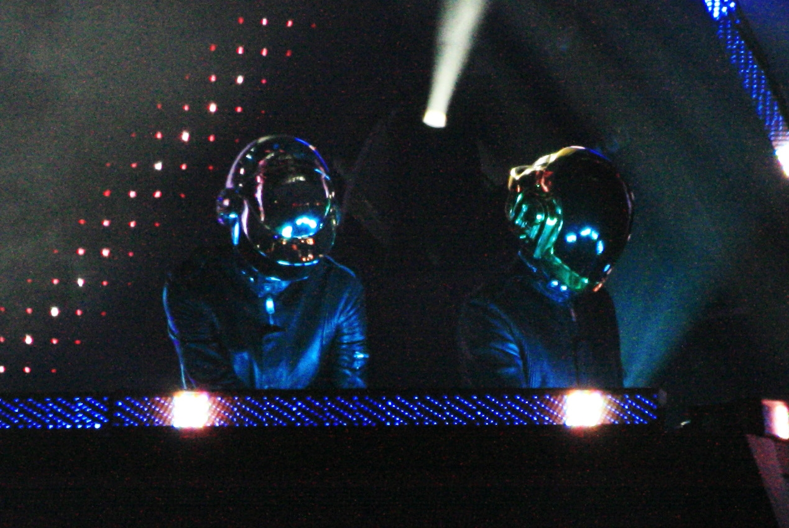

Discography
French electronic music duo Daft Punk released four studio albums, two live albums, one compilation album, one soundtrack album, three remix albums, two video albums, twenty-two singles and nineteen music videos.
Albums
Homework
- "Daftendirekt"
- "WDPK 83.7 FM"
- "Revolution 909"
- "Da Funk"
- "Phœnix"
- "Fresh"
- "Around the World"
- "Rollin' & Scratchin'"
- "Teachers"
- "High Fidelity"
- "Rock'n Roll"
- "Oh Yeah"
- "Burnin'"
- "Indo Silver Club"
- "Alive"
- "Funk Ad"
Discovery
- "One More Time" (featuring Romanthony)
- "Aerodynamic"
- "Digital Love"
- "Harder, Better, Faster, Stronger"
- "Crescendolls"
- "Nightvision"
- "Superheroes"
- "High Life"
- "Something About Us"
- "Voyager"
- "Veridis Quo"
- "Short Circuit"
- "Face to Face" (featuring Todd Edwards)
- "Too Long" (featuring Romanthony)
Human After All
- "Human After All"
- "The Prime Time of Your Life"
- "Robot Rock" (Bangalter, de Homem-Christo, Kae Williams)
- "Steam Machine"
- "Make Love"
- "The Brainwasher"
- "On/Off"
- "Television Rules the Nation"
- "Technologic"
- "Emotion"
Random Access Memories
- "Give Life Back to Music"
- "The Game of Love"
- "Giorgio by Moroder"
- "Within"
- "Instant Crush" (featuring Julian Casablancas)
- "Lose Yourself to Dance" (featuring Pharrell Williams)
- "Touch" (featuring Paul Williams)
- "Get Lucky" (featuring Pharrell Williams)
- "Beyond"
- "Motherboard"
- "Fragments of Time" (featuring Todd Edwards)
- "Doin' It Right" (featuring Panda Bear)
- "Contact"